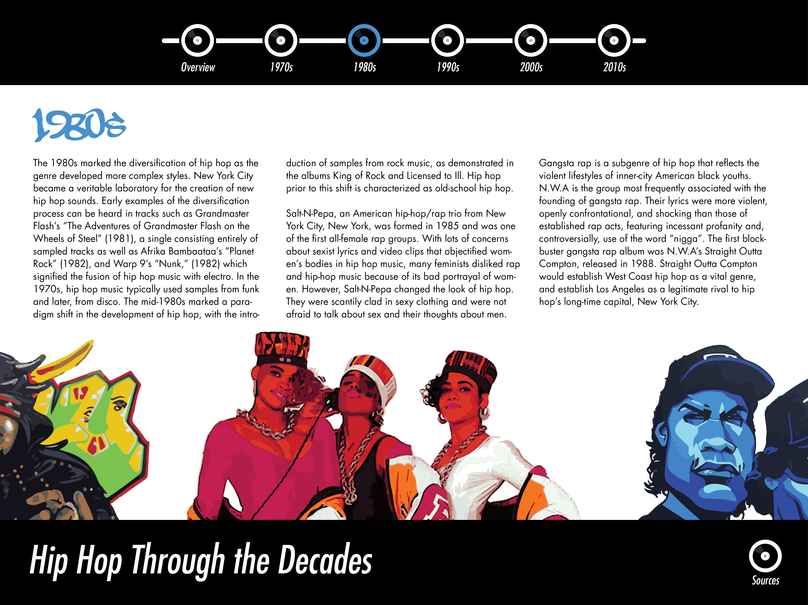
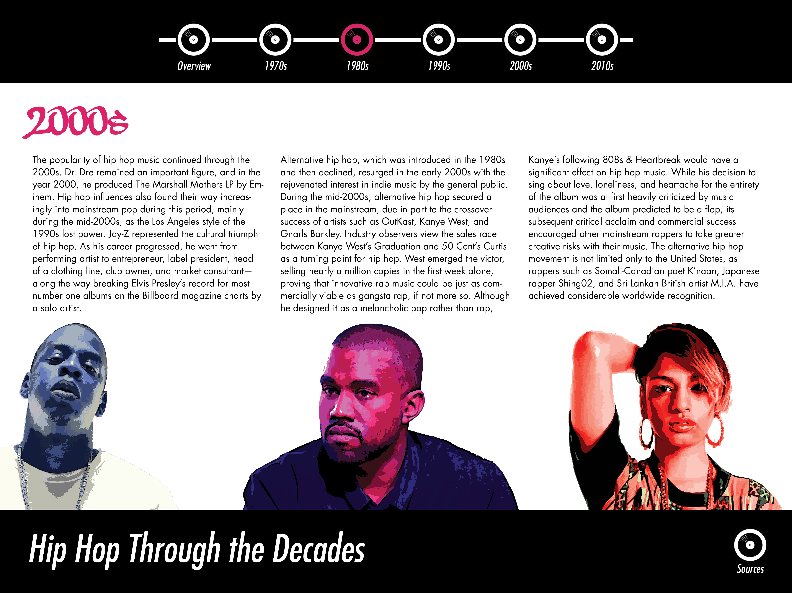
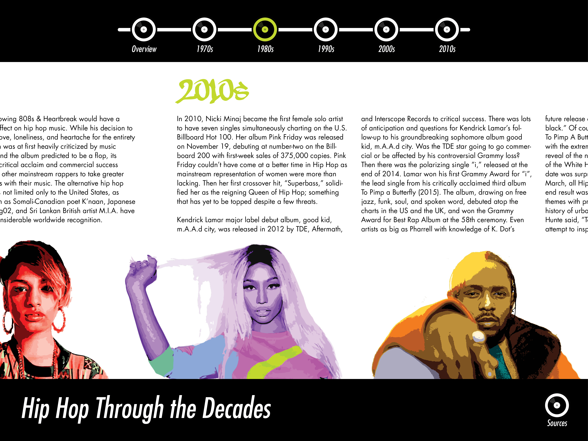
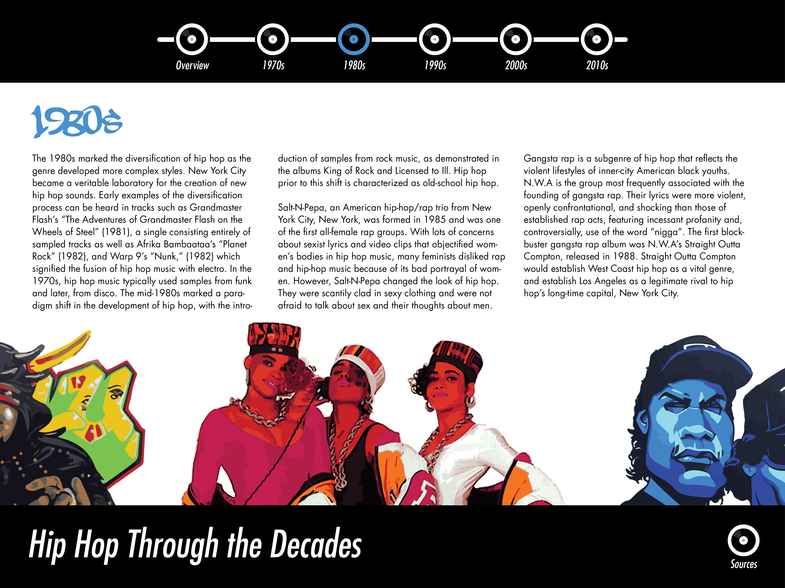
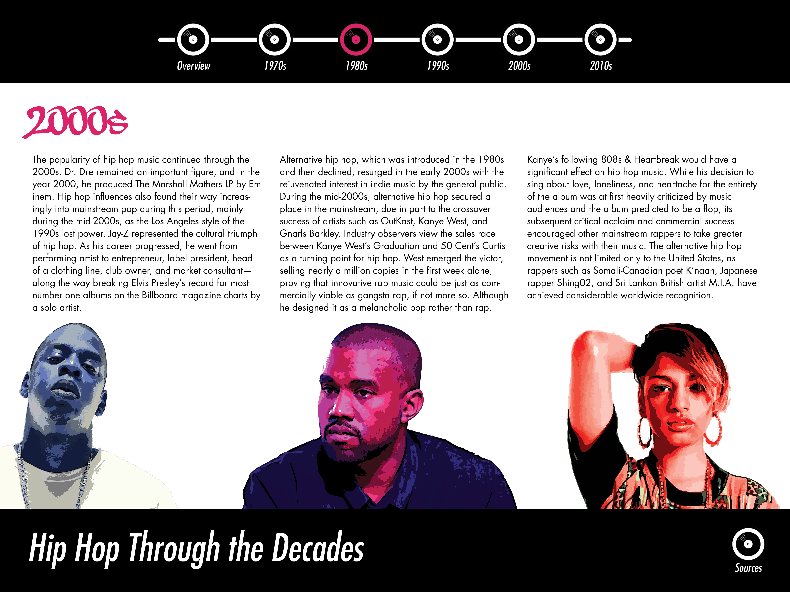
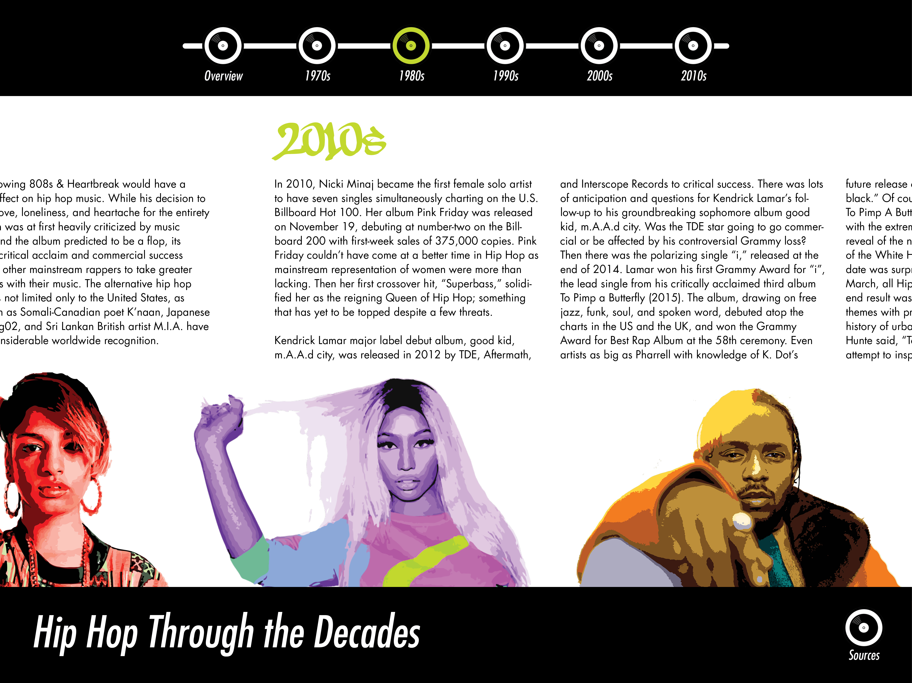

Revised Microsite Mockup
 In the revised design, I used the same typeface (Futura) for the page header, the subheadings (decades), and the body copy.

The earlier design had awkward spaces between the two artists on the edge of the page, whereas now the artists are lined up side-by-side to create a better balance of space. In the responsive design, some artists may disappear as the size of the window narrows. The color of the record player indicating the decade is more vibrant in this design than in the previous one. I also emphasized the inclusion of female artists when creating the content for the revised design.


These images show how transitions between different decades work. When building the site, I will attempt to use Java Script to enable horizontal scrolling, so that navigation throughout the site is continuous and streamlined. This allows for more content to be included for certain decades. The site user can also jump from decade to decade using the navigation buttons on the top.
Another idea I have is to make the artist images interactive as a way to incorporate audio into the site. The idea is that users could click on each artist to play a song by that artist.
In the revised design, I used the same typeface (Futura) for the page header, the subheadings (decades), and the body copy.

The earlier design had awkward spaces between the two artists on the edge of the page, whereas now the artists are lined up side-by-side to create a better balance of space. In the responsive design, some artists may disappear as the size of the window narrows. The color of the record player indicating the decade is more vibrant in this design than in the previous one. I also emphasized the inclusion of female artists when creating the content for the revised design.


These images show how transitions between different decades work. When building the site, I will attempt to use Java Script to enable horizontal scrolling, so that navigation throughout the site is continuous and streamlined. This allows for more content to be included for certain decades. The site user can also jump from decade to decade using the navigation buttons on the top.
Another idea I have is to make the artist images interactive as a way to incorporate audio into the site. The idea is that users could click on each artist to play a song by that artist.